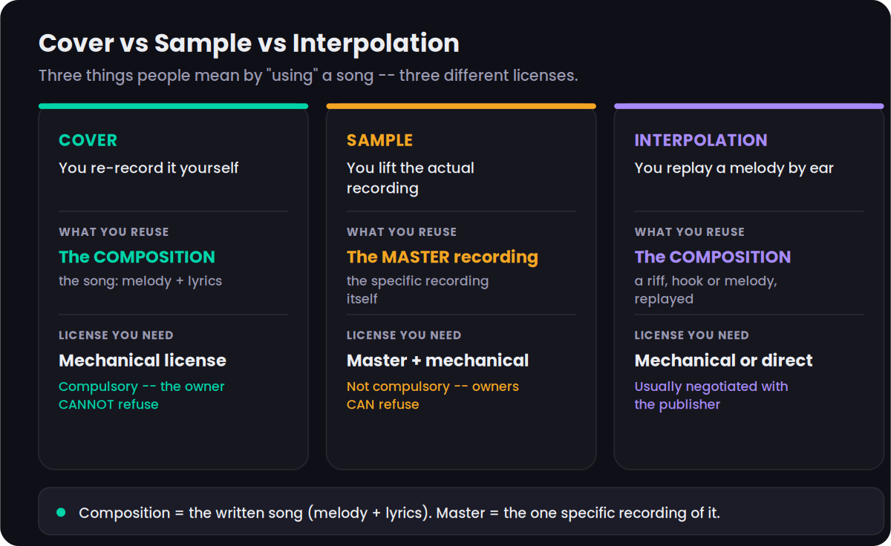
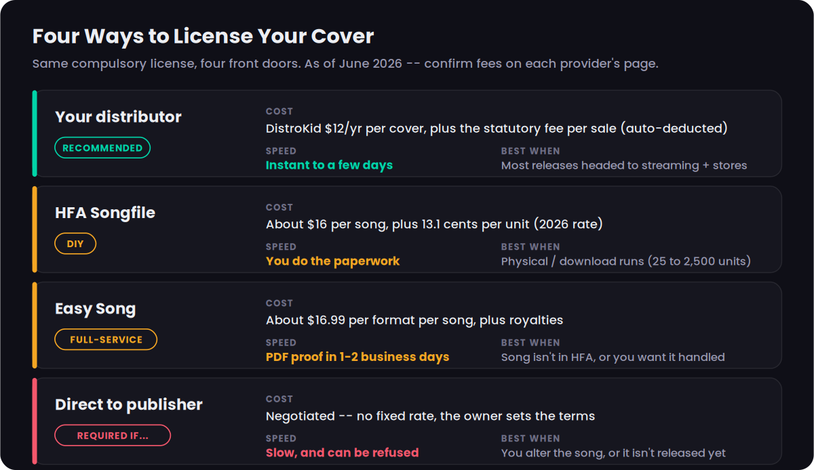
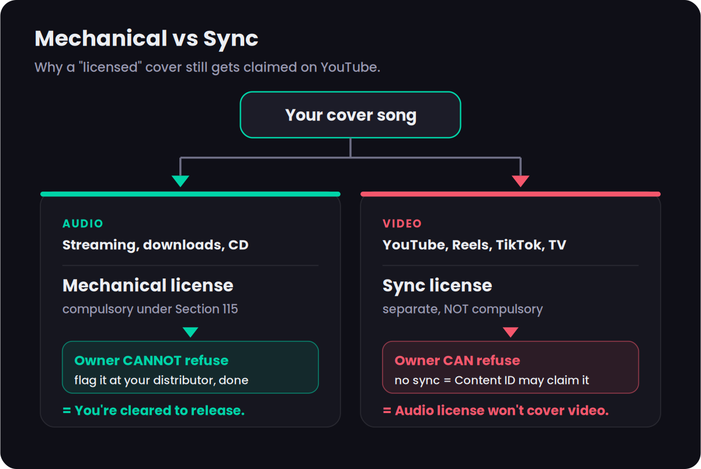

Recording someone else’s song is the most common legal step an independent artist ever takes — and the one most beginners quietly get wrong. The good news is the part that scares people is the part you don’t have to worry about: you do not need anyone’s permission to release a cover. What you need is a license, and US law guarantees you can get it. This guide walks the whole path in plain English: what a mechanical license is, what a cover actually costs in 2026, the four ways to get one, the single mistake that gets “licensed” covers claimed on YouTube, and exactly what to do, step by step.
To release a cover legally you need a mechanical license for the song. In the US it is compulsory: once a song has been commercially released, the owner cannot say no, provided you pay the statutory rate. The fastest, cheapest route for almost everyone is to flag the track as a cover when you upload to your distributor — DistroKid, for example, does the paperwork for about $12 a year per cover. One mechanical license covers audio everywhere; video (YouTube, Reels) is a separate sync license, which is why a properly licensed cover can still get a Content ID claim. Rates and fees verified June 2026.
Before anything else, one distinction does most of the work in this whole topic, so it is worth fixing in your mind now. A song is two separate copyrighted things. There is the composition — the written work, the melody and the lyrics, owned by the songwriter and their publisher. And there is the master — one specific recorded performance of that composition, owned by whoever paid to record it (often a label). When you cover a song, you re-record the composition yourself, creating a brand-new master that you own. You are using the songwriter’s composition, so you owe them a mechanical license, but you are not touching anyone else’s recording. That is the entire reason a cover is so much easier to clear than a sample. For the bigger picture of how all these rights fit together, our music publishing explainer and music licensing overview map the whole landscape; this page is the do-this-now version for covers specifically.
Cover vs Sample vs Interpolation: Which One Are You Doing?
People use these three words loosely, but they trigger completely different licensing, so getting the label right is the first real decision. A cover is when you re-record the song yourself — your voice, your players, your production — performing the existing composition. A sample is when you lift a piece of the actual original recording and drop it into your track. An interpolation is when you replay a recognizable melody or hook from another song by ear, without using the original recording.

The licensing follows directly from what you reuse. A cover reuses only the composition, so you need only a mechanical license — and that license is compulsory, meaning the owner cannot refuse you. A sample reuses the master recording (and usually the composition too), so you need to clear both the master and the composition, and neither owner is obligated to say yes. That is why sampling is slow, expensive and frequently impossible, while covering is cheap and guaranteed. If sampling is actually what you’re doing, this is the wrong guide — read how to clear a sample instead, because the process and the costs are entirely different.
Interpolation sits in between. Because you are replaying the composition rather than using the original recording, you do not need a master clearance, but you do owe the publisher for the composition. In practice interpolations are often handled by direct negotiation with the publisher rather than a standard compulsory mechanical, because the use is partial and the splits are negotiated. The practical rule of thumb: if you sang and played it yourself and you’re releasing the whole song, you are doing a cover, and the rest of this guide is for you. If you grabbed audio from the original record, stop and go clear a sample.
One more honest caveat that trips people up: a “cover” has to stay recognizably the same song. You can change the genre, slow it down, strip it to a piano ballad, or rebuild the arrangement from scratch — all of that is fine. What you cannot do under the compulsory license is rewrite the melody or the lyrics. The moment you materially change those, you have created a derivative work, which is a different animal we’ll come back to in the edge cases.
What a Mechanical License Actually Is
A mechanical license is permission to reproduce and distribute a musical composition — historically on a “mechanical” medium like a piano roll or a record, hence the name, and today on CDs, downloads and streams. When you release a cover, the mechanical license is the thing that makes your reproduction of the songwriter’s composition legal, and it is the mechanism by which the songwriter gets paid their share.
The part that surprises most people is that in the United States this license is compulsory, under Section 115 of the Copyright Act. Once a songwriter has chosen to commercially release their song — let it out into the world for the first time — they lose the right to stop other people from recording their own versions of it. Anyone can record a cover and put it out, and the rights holder is legally required to grant the license at the government-set statutory rate. You are not asking for a favor; you are exercising a right. That is the single most reassuring fact in this entire process, and it is why a label can’t block your cover the way it could block a sample.
What you do owe is the money and the paperwork. The compulsory license comes with the statutory royalty rate attached — a fixed, government-set amount per copy or per stream that flows to the songwriter and publisher. You don’t negotiate it; you pay it. The administrative side — actually obtaining the license and reporting your sales — is what the services in the next section handle for you. If you write your own originals as well, it’s worth understanding the flip side of this: when other people cover your songs, you’re the one collecting the mechanical, which is one of the income streams covered in how music royalties work.
Two boundaries on the compulsory license are worth stating up front, because both come up constantly. First, it only applies to songs that have already been commercially released — you cannot use it to be the first to release someone’s unreleased song. Second, it only covers a faithful rendition. It does not give you the right to change the fundamental character of the song by rewriting its melody or lyrics. Stay inside those two lines and the law is firmly on your side.
What a Cover Costs in 2026
A cover’s cost has two layers, and conflating them is where most online guides go wrong. The first layer is the statutory royalty — the per-copy amount that belongs to the songwriter. For 2026, the Copyright Royalty Board’s rate for physical media and permanent downloads is 13.1 cents per copy for a song five minutes or shorter, or 2.52 cents per minute for longer songs, whichever is greater. That is the figure to use today. If you see an older guide quoting 9.1 cents, that rate was frozen from 2006 to 2022 and is now dead; the current Phonorecords IV schedule introduced annual cost-of-living increases, and 13.1 cents is the verified 2026 number.
The second layer is the service fee — what you pay the company that actually issues the license and reports your sales. This is separate from the royalty and varies by provider. It is the layer that’s easy to control, and choosing the right provider for your situation is the real decision, which the next section breaks down.
Streaming works on a different mechanism, and it’s important not to mash the two together. The 13.1-cent figure is a per-copy rate for physical and download sales. Interactive streaming mechanicals are calculated as a percentage of the streaming service’s revenue and are administered through the Mechanical Licensing Collective on the platform side, not bought copy-by-copy. For a normal streaming release, you don’t purchase a separate per-stream Songfile license — your distributor handles the cover mechanical and the per-stream songwriter share flows through the system automatically. If the streaming-royalty machinery itself is unfamiliar, music streaming royalties explained unpacks how those fractions of a cent are calculated and split.
So what does a cover realistically cost a typical indie artist releasing to Spotify and the other streaming platforms? In practice: a small annual or per-song service fee — on the order of $12 to $17 — plus the statutory royalty, which on streaming is a sliver of a cent per play deducted automatically. For most people the headline number is the service fee, and it is genuinely cheap. The expensive mistake is not the license; it is skipping the license and getting the release pulled.
The Four Ways to Get Licensed
There are four front doors to the same compulsory license. They differ in cost, speed, and how much of the work you do yourself. For the overwhelming majority of indie artists, the first one is the right answer — but it’s worth knowing all four so you can recognize the situations where the others make sense.

1. Your distributor (recommended for almost everyone). If you’re already using a distributor to get your music onto Spotify and Apple Music, you can simply flag the track as a cover during upload and let the distributor secure the mechanical license for you. DistroKid charges about $12 per year per cover song and deducts the statutory fee from your earnings automatically; CD Baby and TuneCore offer the same flag-it-at-upload handling through their own arrangements with the Harry Fox Agency. This is the fastest, cheapest, and lowest-effort path, and it handles international mechanicals automatically when you release worldwide. If you’re still choosing a distributor, our DistroKid vs TuneCore and DistroKid vs CD Baby comparisons cover how each handles covers, and how to distribute music walks the broader setup.
2. HFA Songfile (the DIY route). The Harry Fox Agency is the largest issuer of mechanical licenses in the US, and its Songfile portal is built for self-serve licensing. You search for the song, choose your format, enter the number of units, and pay a per-song processing fee (historically around $16, lower for several songs in one transaction) on top of the statutory royalty. Songfile is best when you’re pressing physical copies or selling downloads on your own — it issues licenses for runs from 25 up to 2,500 units (or 100 to 10,000 interactive streams). Above those caps you set up a full licensing account with HFA directly.
3. Easy Song (full-service). Easy Song does the legwork for you: you tell them the songs, they find the rights holder, secure the license, and send you PDF proof, typically within one to two business days, for a fee historically around $16.99 per format per song plus royalties. This is the right call when a song isn’t in HFA’s catalog, when the rights are tangled, or when you simply want the whole thing handled end-to-end without touching it yourself.
4. Directly with the publisher. You can always go straight to the song’s publisher and negotiate. You generally only need to in the cases where the compulsory license doesn’t reach: when you’re changing the melody or lyrics (a derivative work), when the song was never commercially released, or when you need rights the mechanical doesn’t grant, such as sync for a video. Direct deals have no fixed rate, take longer, and can be refused — which is exactly why the compulsory mechanical, when it applies, is such a gift.
The Video Trap: Mechanical Is Not Sync
This is the single most common and most expensive misunderstanding about covers, so it gets its own section. A mechanical license covers audio distribution — streaming, downloads, CDs, vinyl — everywhere. It does not cover putting your cover into a video. The moment there are moving images, a separate license called a synchronization license, or sync, comes into play, because you are now “synchronizing” the composition to visuals.

And here is the crucial difference: sync is not compulsory. Unlike the mechanical, the rights holder is under no obligation to grant a sync license and can refuse, or charge whatever they like. That is why an artist who dutifully licensed their cover for streaming is baffled when YouTube slaps a Content ID claim on the same cover uploaded as a video. The mechanical license they bought was real and correct — it just never covered the video use, and the sync was a separate thing they never obtained.
In practice, this is usually less scary than it sounds. For most cover videos on YouTube, the rights holder doesn’t take your video down; Content ID simply identifies the composition and routes the advertising revenue to the songwriter and publisher instead of to you. Your video stays up; you just don’t monetize it. If you want to keep the ad revenue, or you’re using the cover in something commercial like an ad or a film, that’s when you need to actually obtain a sync license, which means negotiating directly with the publisher. If sync is a direction you want to pursue seriously, how to get sync licensing deals covers that world. The one-line takeaway: license the mechanical for the audio, expect a Content ID claim on the video, and only chase a sync license if you specifically need the video to earn or to run commercially.
What You Keep vs What the Writer Keeps
A cover splits cleanly into two royalty streams, and understanding the split tells you exactly what’s yours. Remember the composition-versus-master distinction from the start of this guide: it maps directly onto who earns what. You created and own a new master recording, so the master-side royalty — the bulk of streaming and sales income — is yours. The original songwriter owns the composition, so the composition-side royalty — the mechanical, paid through your license — is theirs.
Concretely, when your cover earns on streaming, you keep your streaming income minus the small statutory mechanical that’s passed through to the writer. You are not giving away most of your money; you are paying the songwriter their legally-defined slice for the use of their composition, and keeping the rest as the owner of the recording. That is a fundamentally good deal, which is why covers are such a reliable way to grow an audience: you carry the recognition of a known song while still building and owning your own catalog of masters.
There is a second income stream on the composition side worth knowing about even though it isn’t yours: performance royalties, which are generated when the song is played publicly or streamed and are collected by performing rights organizations for the songwriter. As the cover artist you don’t collect the composition’s performance royalty — but you should absolutely register your master recording and your artist profile so that your side is being collected everywhere it’s owed. How to register your music and how to copyright your music cover protecting and registering the recording you just made.
If you covered the song with collaborators — a featured vocalist, a co-producer — the master side needs its own splits sorted out among you, entirely separately from the songwriter’s composition share. Agree those percentages in writing before the release, not after the money starts arriving. A simple split sheet does the job and prevents the most common and most bitter disputes in independent music.
Releasing a Cover, Step by Step
Here is the whole process condensed into the order you actually do it. None of these steps is hard; the value is in doing them in sequence and not skipping the licensing one.
- Confirm the song has been released. Check that the song you want to cover has been commercially released in the US. If it has, the compulsory mechanical license is available to you. If it has never been released, you’ll need the writer’s direct permission instead.
- Record your own version. Make your own recording — your performance, your production. It must be genuinely your master, not a copy or re-edit of the original recording. Keep the melody and lyrics fundamentally intact so you stay inside the compulsory license.
- Choose your licensing path. For almost everyone, this means your distributor: pick the one you’ll use to release and plan to flag the track as a cover at upload. Use Songfile or Easy Song instead only if you’re selling physical copies yourself or the song isn’t in HFA’s catalog.
- Clear the mechanical license. During upload, mark the track as a cover (on DistroKid, choose the “another artist wrote it” option). The distributor secures the compulsory mechanical and deducts the statutory fee automatically. If you went DIY, buy the Songfile or Easy Song license now and keep the PDF proof.
- Distribute to stores and streaming. Release as normal. The cover is now legal on Spotify, Apple Music and the rest. Most distributors handle international mechanicals automatically, though a few territories have sales quirks worth checking.
- Handle video separately, then collect. Remember that your audio license does not cover video. Expect a Content ID claim on any YouTube version and pursue a sync license only if you need that video to monetize. Then make sure your own master royalties and artist profiles are registered so you collect everything you’re owed.
That’s the entire path. If you’re releasing to Spotify specifically and want the platform-side details — profiles, pre-saves, playlist pitching — how to get music on Spotify picks up where this leaves off, once the cover is cleared.
Edge Cases Worth Knowing
Public-domain songs. If the composition is old enough to be in the public domain, you need no mechanical license at all — it’s free to record. As of January 1, 2026, US compositions first published in 1930 or earlier are in the public domain, which now includes standards like “I Got Rhythm” and “Body and Soul.” Two cautions: a specific published arrangement of a public-domain song can carry its own fresh copyright, and a handful of 1930–1977 works are public domain only if they were published without a copyright notice or weren’t renewed — so verify the individual song rather than assuming.
Changing the lyrics or melody. As covered earlier, materially altering the melody or lyrics — including translating lyrics into another language — creates a derivative work that the compulsory license does not cover. That requires the publisher’s direct permission, which they can refuse. Rearranging the style is fine; rewriting the song is not.
Parody. A parody changes the lyrics to comment on or make fun of the original. Parody can be protected by fair use, but fair use is a fact-specific legal defense decided case by case, not a license you can buy, and not the same as a cover. If your “cover” is really a lyric rewrite for comedic effect, you’re in fair-use territory, not compulsory-mechanical territory — our explainer on music copyright and fair use lays out the four factors courts weigh.
Unreleased songs. The compulsory license only exists once a song has been commercially released. You cannot use it to be the first to put out someone’s unreleased track — that always needs direct permission from the rights holder.
AI-generated covers. A cover generated or assisted by AI still needs the composition licensed exactly like any other cover; the AI changes nothing about the songwriter’s mechanical. What it does add is a layer of new risk: cloning the original performer’s voice can raise right-of-publicity claims, and distributors now require you to disclose AI involvement (with some barring fully AI-generated tracks). The legal ground here is shifting fast, and we track it in is AI music legal.
International releases. A US mechanical license covers US distribution. When you release worldwide through a major distributor, international mechanicals are generally handled for you automatically — but territories differ, and at least one distributor streams cover releases in certain countries without selling them there. If you have a specific market in mind, confirm your distributor’s territory handling rather than assuming global coverage.
Before You Release: 3 Checks
Run these three quick checks before you upload. Each takes a few minutes and catches the mistakes that are expensive to undo.
- Ask: did I re-record this myself, or did I use audio from the original recording? If you used the original audio, stop — that’s a sample, and it needs a different clearance.
- Confirm the song was commercially released in the US. If it was, the compulsory mechanical is available to you.
- Check that you kept the melody and lyrics intact. If you rewrote either, you’ve made a derivative work and need direct permission.
- Decide where the cover is going: streaming and stores, or physical copies you’ll sell yourself.
- If it’s streaming and stores, plan to flag it as a cover at your distributor — that’s almost always cheapest. If it’s a physical run, price a Songfile license for your unit count.
- If the song isn’t in HFA’s catalog or the rights look tangled, budget for Easy Song to handle it end-to-end instead.
- If you’ll post the cover as a video, accept up front that a Content ID claim is normal, and decide whether you need a sync license to keep the ad revenue.
- If you covered the song with collaborators, write the master-side splits into a split sheet before release.
- Register your master recording and artist profiles so your side of the royalties is collected everywhere it’s owed.
Frequently Asked Questions
Yes, you need a mechanical license, but you do not need the songwriter's permission. Once a song has been commercially released in the United States, Section 115 of the Copyright Act lets anyone record and distribute their own version, and the rights holder cannot refuse, as long as you obtain the mechanical license and pay the statutory rate.
There are two parts. A per-copy statutory royalty that goes to the songwriter, which for 2026 is 13.1 cents per copy for physical media and permanent downloads (or 2.52 cents per minute for songs over five minutes), plus a service fee. The cheapest route is your distributor: DistroKid charges about $12 a year per cover song and deducts the statutory fee automatically. HFA Songfile runs about $16 per song; Easy Song about $16.99 per format per song. Confirm current fees on each provider's page.
Because a mechanical license only covers audio distribution. A video, including your cover on YouTube with visuals, a Reel or a TikTok, needs a separate synchronization (sync) license, which is not compulsory and which the rights holder can refuse. Most cover videos are not blocked; Content ID simply routes the advertising revenue to the songwriter and publisher instead of to you.
Yes. You own and earn the master recording royalty for your specific recording. The original songwriter and publisher earn the composition royalty (the mechanical and performance royalties) through the license. In practice you keep your streaming and sales income minus the statutory mechanical that is paid through to the writer.
Almost. Compulsory licensing applies only to songs that have already been commercially released in the United States. You cannot compulsory-license a song that has never been released, which would need the writer's direct permission. And you cannot materially change the song under the compulsory license.
Then you need no mechanical license at all. As of January 1, 2026, US musical compositions first published in 1930 or earlier are in the public domain. Two cautions: a specific published arrangement of a public-domain song may still carry its own copyright, and you should verify each work, because some works from 1930 to 1977 are public domain only if they were published without a copyright notice or were not renewed.
Not under the compulsory license. A straight cover can reinterpret the arrangement and style freely, but materially altering the melody or lyrics, including translating the lyrics into another language, creates a derivative work that falls outside Section 115 and needs the publisher's direct permission.
No. A cover re-records the song faithfully under a mechanical license. A parody changes the lyrics to comment on or mock the original and relies on fair use rather than compulsory licensing, which is a separate, fact-specific legal question with no guaranteed outcome. If you are unsure, treat it as needing direct permission.
Somewhat. The 13.1-cent per-copy rate is for physical media and permanent downloads. Interactive streaming mechanicals are a percentage-of-revenue regime administered through the Mechanical Licensing Collective (the MLC) on the platform side. As an independent artist you still clear your own cover mechanical through your distributor or Songfile; the MLC simply ensures writers are paid out of the platform's streaming revenue.
A US mechanical license covers US distribution. Most distributors (DistroKid, CD Baby, TuneCore) handle international mechanicals automatically when you release worldwide, but some territories have quirks; DistroKid cover releases, for example, are streamed but not sold in a handful of countries. Confirm how your distributor handles territories before you release.
The same mechanical license rules apply to the composition. AI raises extra issues, though: cloning the original artist's voice can trigger right-of-publicity claims, every major distributor now requires you to disclose AI involvement, and some distributors bar fully AI-generated tracks outright. The composition still has to be licensed exactly as any other cover.
The release is infringing. Practically, the platform can remove it with no warning, and the rights holder can pursue statutory damages of up to $150,000 per work for willful infringement. A cover license costs less than a meal out, so the exposure is never worth skipping it.